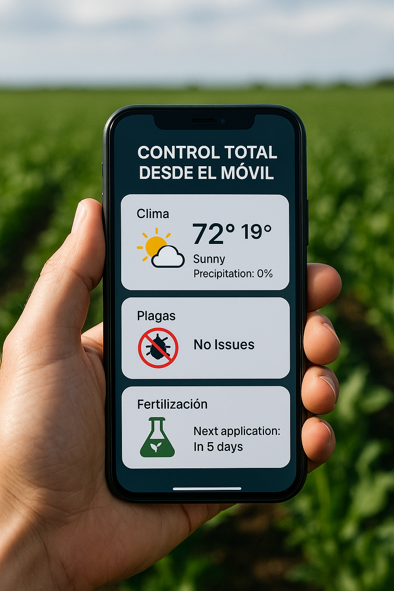

Tecnología aplicada al campo

Sensor de humedad
Mide la humedad del suelo en tiempo real, optimizando el riego.

Drones de fumigación
Supervisan el estado de cultivos con imágenes aéreas de alta precisión.

Aplicaciones móviles
Control total desde el móvil: clima, plagas, fertilización.
VENTAJAS
- Optimiza el riego
- Mejora la salud del cultivos
- Mayor rendimiento y calidad de la cosecha
- Sostenibilidad ambiental
- Precisión y efectividad
- Ahorro de tiempo y costes
- Mejora de la seguridad
- Análiza los datos
- Sostenibilidad ambiental
- Tomar decisiones basada a partir de los datos
- Optimización de recursos
- Mejora de la productividad y rentabilidad
- Sostenibilidad
- Innovación y modernización en el sector